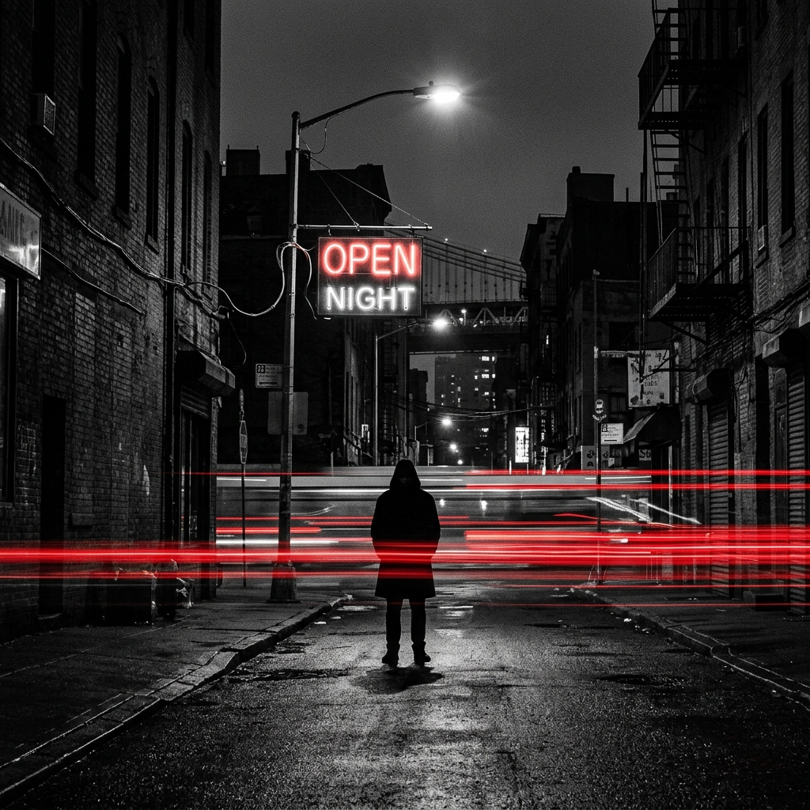
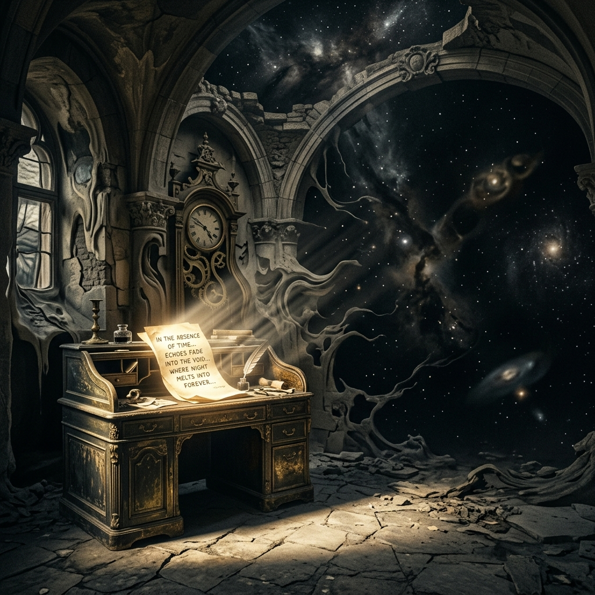
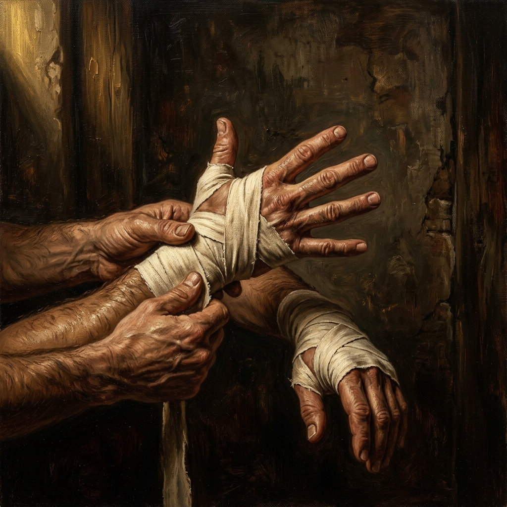

AVASTHA
A gritty social commentary on modern chaos, accountability, family obligation, expatriation, isolation, and rebuilding from the ground up.
Listen on YouTubeOfficial Master Portfolio
Malayalam rap, stark spoken word, and independent cinema shaped through heavy shadow, restrained gold, and autobiographical force.
Interactive Audio Vault
Tracks arranged as visual chapters: isolation, failure, resilience, gratitude, companionship, and self-rebuilding.

A gritty social commentary on modern chaos, accountability, family obligation, expatriation, isolation, and rebuilding from the ground up.
Listen on YouTube
A personal map of an introverted mind, where silence becomes a tactical refuge instead of emotional weakness.
Visit Introvert MTUA hard-hitting meditation on failure that turns real losses into material for psychological resilience.
Listen on YouTube
A grounded exploration of manhood, emotional repair, courage, and the quiet discipline of protecting inner peace.
Listen on YouTubeA calm thank-you to the people, limits, mentors, and difficult lessons that formed the artist's identity.
Listen on YouTubeA conscious rap piece about purpose, generosity, legacy, and giving away the gift once it is found.
Listen on YouTubeCinematic Portal
An independent short film extension of the music, built around stripping away old identities so a new self can begin.
Experimental lighting, minimal dialogue, and heavy shadows turn the film into a visual companion to the music: a controlled burn of memory, pain, and renewal.
Core Literary Piece
Mercy is framed as an act of immense internal strength, not softness.
The piece moves from confrontation to release, examining justice, trauma, restraint, and the final freedom that comes from refusing to let cruelty define the self.
Access on YouTubeSystem Footer